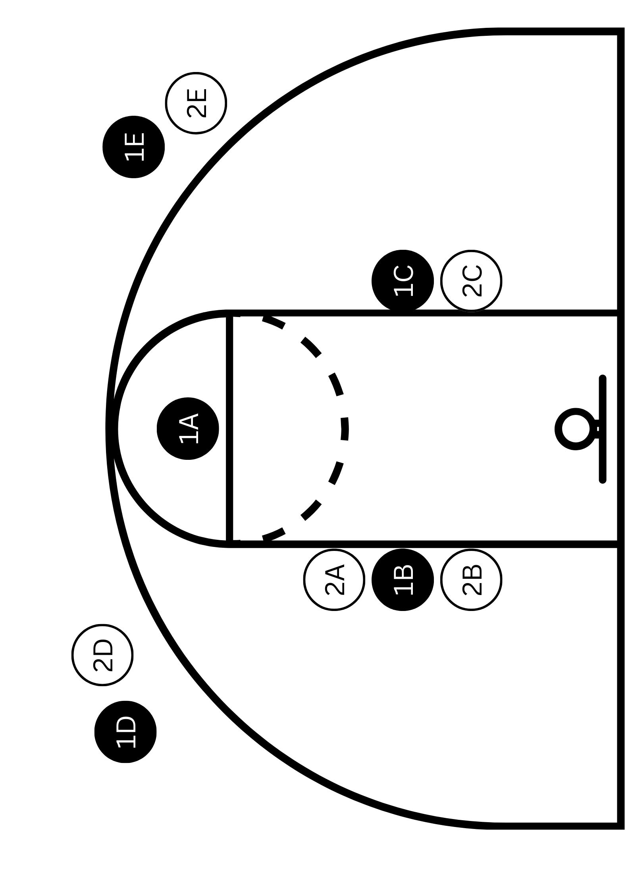

Basketball is a super fun game to play but learning the rules is crucial to being able to play properly.
Teams & Subs
Each team has 5 players on the court at one time, while any amount of subs can be on the bench. You can only sub a player on during a break in play and theres no limit to the amount of subs you can do in a game. Unlike soccer you can be subbed off then you go back on later
Dribbling
Double Dribble
While dribbling you can only use one hand at a time. Using 2 hands at the same time or swapping hands before the ball touches the ground is a violation called a double dribble.
Carry
Your hand must be on top of the ball while dribbling, you cannot put your hand under the ball or "carry" it during a dribble, this violation is called a carry.
Travel
Walking without the ball is a traveling violation, in order to move your feet you must dribble the ball. However a traveling violation only occurs after you take two steps, when you recieve the ball or stop dribbling you can only take two steps.
Fouls
Personal Fouls
A personal foul is an illegal physical contact by a player against an opponent. For example, holding (holding onto an opponent), pushing (Forcibly making contact with an opponent to move them) or charging (An offensinve plaery illegily running into a stationary defensive player).
Free Throws
A free throw is awarded to you when an opponent commits a foul against you, wether you're shooting or not. When shooting a free throw you must stand behind the free throw line and you must shoot the ball within 10 seconds of recieving the ball. A free throw rewards teams with 1 point. 
Shot Clock
The shot clock is a 24 second clock that counts down as soon as a team gets possesion and indicates how much time the team has left to make a shot, if the team doesnt make a shot or lose the ball when the timer ends, the ball is turned over to the other team. However most clubs dont use a shot clock, a shot clock is only used in the NBA